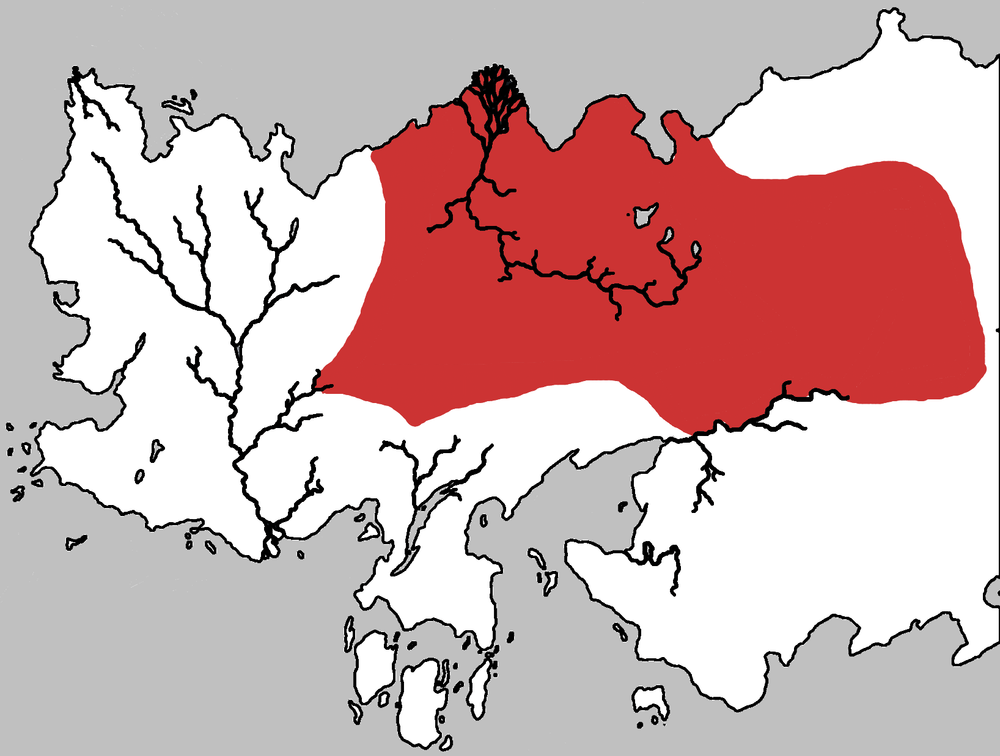

Dothraki Sea
The Dothraki Sea is vast inland region on the continent of Essos, located east of the Free Cities. Its landscape of steppes and plains is home to the nomadic Dothraki equestrian people, who constantly battle each other and raid surrounding lands.
Located in the inland of Essos, east of the Free Cities, the Dothraki Sea starts at the Forest of Qohor and extends eastward as far as the desert wasteland known as the Red Waste. To the south the Dothraki Sea is bounded by Slaver’s Bay and the Skahazadhan River, which flows into it. South of the river live the Lhazareen people. The Dothraki Sea is so immense it can support more than two dozen khalasars, each riding its own circuit and taking what is needed from the land as they go.
